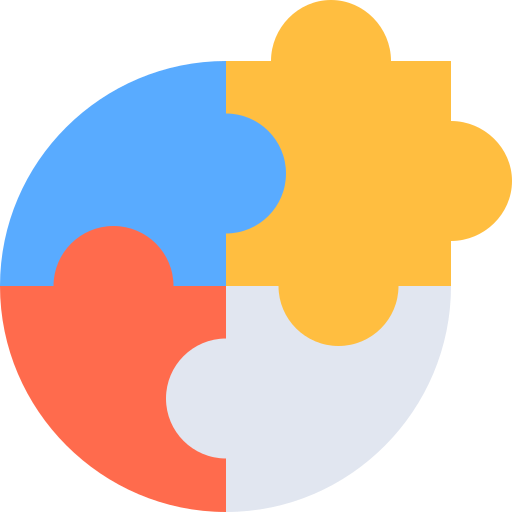

Berpengetahuan
Menjadi ahli di bidangnya
Akuntabilitas
Memahami dan bertanggung jawab untuk melaksanakan tugas dengan benar

Integritas & Etika
Melakukan hal yang benar, dengan cara yang jujur, adil, dan bertanggung jawab

Kerja tim
Bekerja secara kolaboratif, penuh keharmonisasian dan saling menghormati